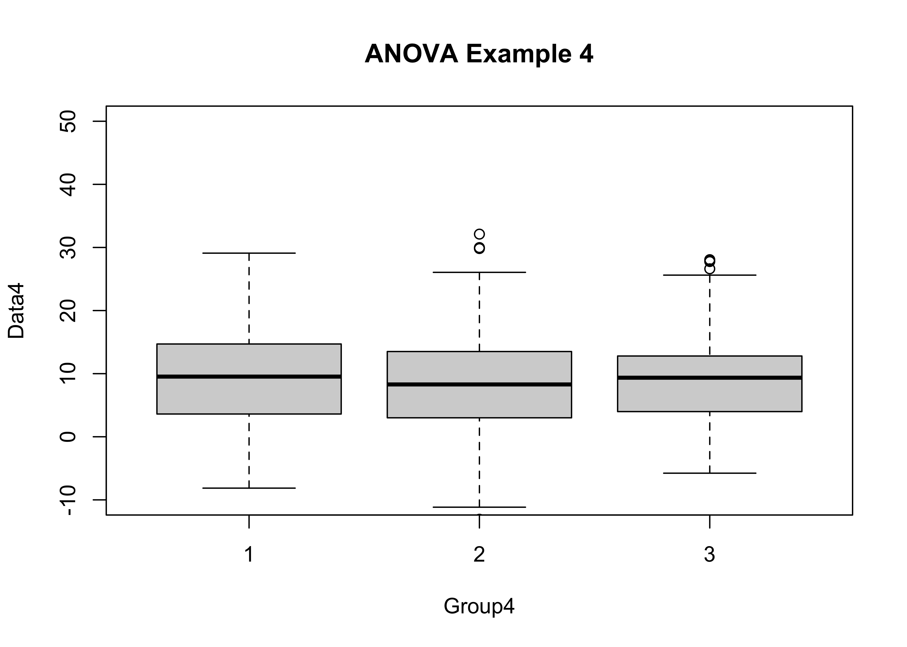
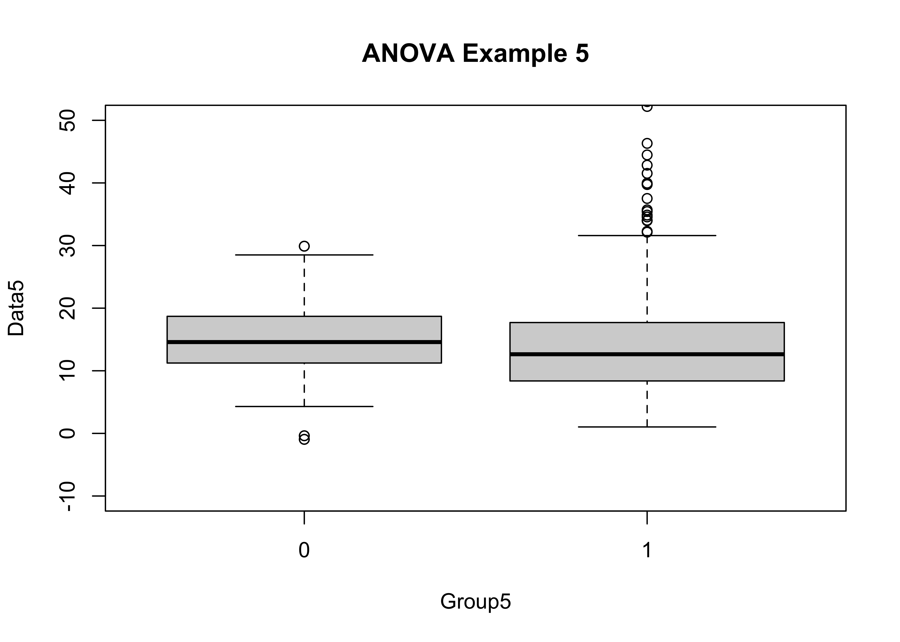

NOTE: This page has been revised for Winter 2021, but may undergo further edits.
“Analysis of variance” (or ANOVA) is designed to test hypotheses about the equality of two or more group means, and gets its name from the idea of judging the apparent differences among the means of the groups of observations relative to the variance of the individual groups.
The basic underlying idea is to compare the variability of the observations among groups to the variability within groups:
There are some assumptions that underlie the application of analysis of variance, and which, if violated, add uncertainty to the results. The assumptions are:
Analysis of variance for testing for the equality of k mean values is a special case of a set of techniques known as linear modeling, which also includes regression analysis, a future topic.
The basic analysis of variance involves one nominal or ordinal scale variable that can be used to place each observation into two or more groups, along with a single response variable. The analysis can be viewed as determining whether knowledge of the group that a particular observation falls in will allow a better idea of the expected value of the response variable to be gained than in the absence of that knowledge.
There are several approaches for evaluating the reasonableness of the assumption of homogeneity of variance. A simple one is Bartlett’s test:
Here is an example data set: [anovadat.csv]
In R’s implementation of the aov() function the group membership is expected to be represented by a “factor”. If the data set is being read in here, the group-membership variables will have to be converted to factors. (They are alread factors in the geog495.Rdata workspace, so if that’s how the data were read in the next step can be skipped.)
After reading the data using read.csv() as usual (e.g. anovadat <- read.csv("anovadat.csv")), convert the integer group-membership variables to factors as follows:
anovadat[,'Group1']<-as.factor(anovadat[,'Group1'])
anovadat[,'Group2']<-as.factor(anovadat[,'Group2'])
anovadat[,'Group3']<-as.factor(anovadat[,'Group3'])
anovadat[,'Group4']<-as.factor(anovadat[,'Group4'])That the conversion has properly taken place can be confirmed by looking at the structure of the data frame.
str(anovadat)## 'data.frame': 750 obs. of 10 variables:
## $ Data1 : num 7.59 10.03 6.77 9.64 9.44 ...
## $ Group1: Factor w/ 3 levels "1","2","3": 1 1 1 1 1 1 1 1 1 1 ...
## $ Data2 : num 12.4 11 11.7 10.8 11.2 ...
## $ Group2: Factor w/ 3 levels "1","2","3": 2 3 2 2 2 1 2 1 2 3 ...
## $ Data3 : num 8.85 11.58 7.97 7.94 6.76 ...
## $ Group3: Factor w/ 3 levels "1","2","3": 1 1 1 1 1 1 1 1 1 1 ...
## $ Data4 : num 11.97 -4.21 7.4 2.16 6.99 ...
## $ Group4: Factor w/ 3 levels "1","2","3": 1 1 1 1 1 1 1 1 1 1 ...
## $ Data5 : num 11 13.3 26.6 13.4 13.4 ...
## $ Group5: int 0 0 0 0 0 0 0 0 0 0 ...The appropriate reference distribution in the case of analysis of variance is the F-distribution. The F distribution has two parameters, the between-groups degrees of freedom, k, and the residual degrees of freedom, N-k:
Here is a plot of the pdf (probability density function) of the F distribution for the following examples:
k <- 3 # number of groups
n <- 750 # number of observations
x <- seq(0,10,by=0.1)
df1 <- k-1
df2 <- n-k
pdf_f <- df(x,df1,df2)
plot(pdf_f ~ x, type="l")See the guide for interpreting p-values for reference: short guide to interpreting test statistics, p-values, and significance
In this example, the boxplot() function is used to get a quick impression of the distribution of the data, and the tapply() function is used to get the mean and standard deviation for each group of observations.
attach(anovadat)
boxplot(Data1 ~ Group1, ylim=c(-10,50), main="ANOVA Example 1")tapply(Data1, Group1, mean)## 1 2 3
## 9.414936 10.319060 9.912563tapply(Data1, Group1, sd)## 1 2 3
## 2.134628 1.960280 2.219063At first glance, the groups don’t look all that different, but changing the y-axis limits can change that perception.
boxplot(Data1 ~ Group1, ylim=c(0,20), main="ANOVA Example 1")The aov() function does the analysis, and stores the results in an object, named here as aov1; similarly, the bartlett.test() test stores the results of the homogenetiy of variance test in the object hov1. Both ‘aov1’ and ‘hov1’ are printed out, and aov1 is further summarized using the summary() function.
aov1 <- aov(Data1 ~ Group1)
aov1## Call:
## aov(formula = Data1 ~ Group1)
##
## Terms:
## Group1 Residuals
## Sum of Squares 102.526 3317.570
## Deg. of Freedom 2 747
##
## Residual standard error: 2.107414
## Estimated effects may be unbalancedsummary(aov1)## Df Sum Sq Mean Sq F value Pr(>F)
## Group1 2 103 51.26 11.54 1.16e-05 ***
## Residuals 747 3318 4.44
## ---
## Signif. codes: 0 '***' 0.001 '**' 0.01 '*' 0.05 '.' 0.1 ' ' 1hov1 <- bartlett.test(Data1 ~ Group1)
hov1##
## Bartlett test of homogeneity of variances
##
## data: Data1 by Group1
## Bartlett's K-squared = 3.9368, df = 2, p-value = 0.1397The “signifcance” of the test statistics (F in the case of analysis of variance and K^2 in the case of the homogeneity of variance test) can be judged by their p-values, or the probablility that the particular value of a test statistic is consistent with values that might arise by chance if the null hypotheses were true. In the case of the F statistic in analysis of variance, the p-value is 0.0091, which implies that the value of the F statistic (6.83) would be highly unusual (occurring only 91 times out of 10,000) if the null hypothesis of no differences in the means among groups was true. We thus have support for rejecting the null hypothesis of no difference among the mean values of the groups of observations, and accepting the alternative hypothesis (i.e. that the means are not equal).
In contrast, the p-value for the homogeneity of variance test, 0.1397, is large enough (i.e. greater than 0.05) to suggest that there is little support for rejecting the null hypothesis that the variances of the data in the individual groups is equal.
There are set of diagnostic plots that can be used to check the assumptions, as well as to gain some more information on the (potential differences) among groups.
par(mfrow=c(2,2))
plot(aov1)par(mfrow=c(1,1))boxplot(Data2 ~ Group2, ylim=c(-10,50), main="ANOVA Example 2")tapply(Data2, Group2, mean)## 1 2 3
## 9.910154 10.229525 10.005028tapply(Data2, Group2, sd)## 1 2 3
## 2.003634 2.078035 1.862050aov2 <- aov(Data2 ~ Group2)
aov2## Call:
## aov(formula = Data2 ~ Group2)
##
## Terms:
## Group2 Residuals
## Sum of Squares 13.3155 2934.0670
## Deg. of Freedom 2 747
##
## Residual standard error: 1.981868
## Estimated effects may be unbalancedsummary(aov2)## Df Sum Sq Mean Sq F value Pr(>F)
## Group2 2 13.3 6.658 1.695 0.184
## Residuals 747 2934.1 3.928hov2 <- bartlett.test(Data2 ~ Group2)
hov2##
## Bartlett test of homogeneity of variances
##
## data: Data2 by Group2
## Bartlett's K-squared = 3.1134, df = 2, p-value = 0.2108This time neither test statisitc is significant (both have p-values greater than 0.05), lending little support for rejecting the two null hypotheses That there is no difference in the means or variances among groups).
This example illustrates a case where the F-statistic is large enough to be significant, but where the null hypothesis of sigificant differences in group variances can not be rejected.
boxplot(Data3 ~ Group3, ylim=c(-10,50), main="ANOVA Example 3")tapply(Data3, Group3, mean)## 1 2 3
## 9.260285 8.086719 9.839427tapply(Data3, Group3, sd)## 1 2 3
## 2.016659 2.001333 2.026067aov3 <- aov(Data3 ~ Group3)
aov3## Call:
## aov(formula = Data3 ~ Group3)
##
## Terms:
## Group3 Residuals
## Sum of Squares 398.7207 3032.1206
## Deg. of Freedom 2 747
##
## Residual standard error: 2.014712
## Estimated effects may be unbalancedsummary(aov3)## Df Sum Sq Mean Sq F value Pr(>F)
## Group3 2 398.7 199.36 49.12 <2e-16 ***
## Residuals 747 3032.1 4.06
## ---
## Signif. codes: 0 '***' 0.001 '**' 0.01 '*' 0.05 '.' 0.1 ' ' 1hov3 <- bartlett.test(Data3 ~ Group3)
hov3##
## Bartlett test of homogeneity of variances
##
## data: Data3 by Group3
## Bartlett's K-squared = 0.038197, df = 2, p-value = 0.9811This example is like example 1, and is intended to be campared with the next example.
boxplot(Data4 ~ Group4, ylim=c(-10,50), main="ANOVA Example 4")
tapply(Data4, Group4, mean)## 1 2 3
## 9.380276 8.497999 8.970932tapply(Data4, Group4, sd)## 1 2 3
## 7.711973 7.856867 7.008895aov4 <- aov(Data4 ~ Group4)
aov4## Call:
## aov(formula = Data4 ~ Group4)
##
## Terms:
## Group4 Residuals
## Sum of Squares 97.47 42412.04
## Deg. of Freedom 2 747
##
## Residual standard error: 7.535018
## Estimated effects may be unbalancedsummary(aov4)## Df Sum Sq Mean Sq F value Pr(>F)
## Group4 2 97 48.74 0.858 0.424
## Residuals 747 42412 56.78hov4 <- bartlett.test(Data4 ~ Group4)
hov4##
## Bartlett test of homogeneity of variances
##
## data: Data4 by Group4
## Bartlett's K-squared = 3.6496, df = 2, p-value = 0.1612Example 4 shows how (relative to Example 3) the presence of larger within-group variances here reduces the apparent significance of the F statistic (to the point of non-significance). It is harder to demonstrate differences among means when the variability within groups is larger.
This last example demonstrates a situation that often arises in practice–the variabilty of two groups of data may differ more than the means do. (This could be more scientifically meaningful that obsrving a simple difference among means.)
boxplot(Data5 ~ Group5, ylim=c(-10,50), main="ANOVA Example 5")
tapply(Data5, Group5, mean)## 0 1
## 14.87515 14.83058tapply(Data5, Group5, sd)## 0 1
## 5.097586 9.459906aov5 <- aov(Data5 ~ Group5)
aov5## Call:
## aov(formula = Data5 ~ Group5)
##
## Terms:
## Group5 Residuals
## Sum of Squares 0.33 35249.67
## Deg. of Freedom 1 748
##
## Residual standard error: 6.864782
## Estimated effects may be unbalancedsummary(aov5)## Df Sum Sq Mean Sq F value Pr(>F)
## Group5 1 0 0.33 0.007 0.933
## Residuals 748 35250 47.13hov5 <- bartlett.test(Data5 ~ Group5)
hov5##
## Bartlett test of homogeneity of variances
##
## data: Data5 by Group5
## Bartlett's K-squared = 137.14, df = 1, p-value < 2.2e-16In practice, one would proceed by discussing the analysis of variance anyway (even though its assumptions are violated), because that’s what people do!
![[the null and alternative hypothesis]](https://pjbartlein.github.io/GeogDataAnalysis/images/aov.gif){kind=link}